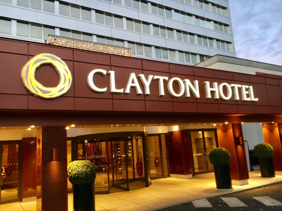
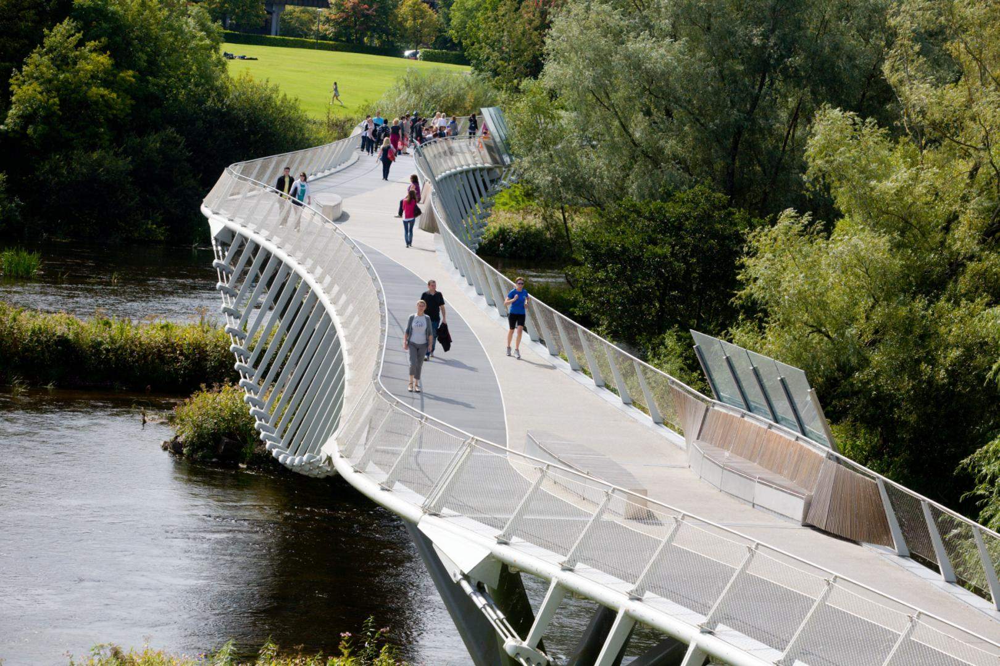
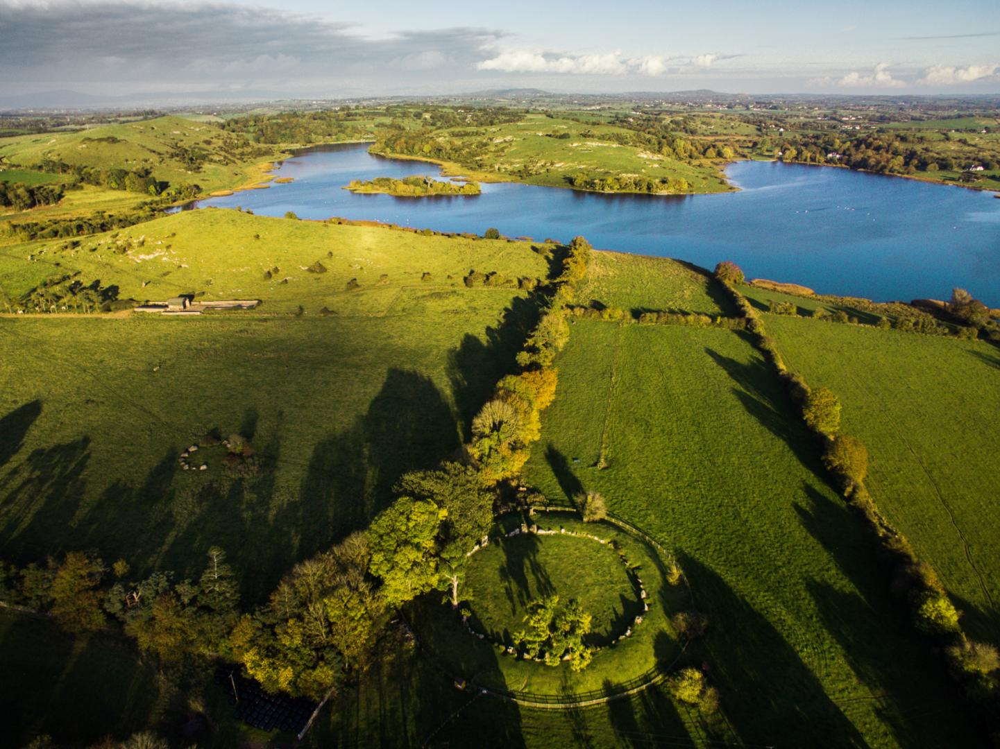
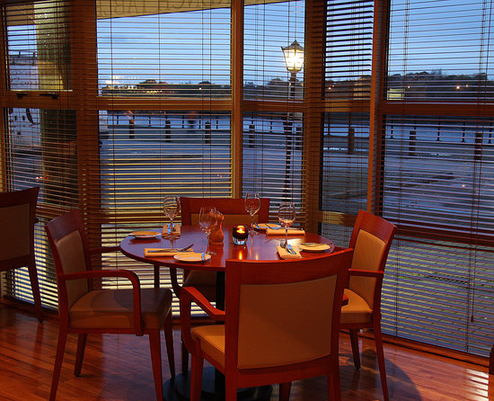

Ireland’s tallest hotel, superbly located overlooking Limerick’s famous River Shannon. The contemporary style, four star luxury and a warm and friendly welcome make Clayton Hotel Limerick a place you want to return to again and again. Clayton Hotel Limerick offers 158 beautifully designed, air-conditioned rooms with stunning views overlooking the River Shannon. Relax and unwind in Superior Rooms, decadent Deluxe Rooms with king size beds or treat yourself with our Executive Rooms or the Penthouse Suite for that special occasion.
“The Living Bridge – An Droichead Beo” is a unique design by Wilkinson Eyre Architects, London and consists of seven 50-metre spans linked together by piers which create four platforms of refuge for walkers. The platforms are designed to accommodate social gatherings, informal teaching sessions, music and dance performances, as well as a wide array of educational, social and cultural activities – all contributing to this facility’s status as a “living” bridge”. The bridge alternates between rhythms of bridge and island, with lightweight bridge structures joining to more solid pier locations.
Lough Gur is a lake in County Limerick, Ireland between the towns of Herbertstown and Bruff. The lake forms a horseshoe shape at the base of Knockadoon Hill and some rugged elevated countryside. Lough Gur is a magical and mysterious place that is rich in folklore along with a wealth of archaeology and history dating back to Stone Age times. The Heritage Centre provides a fascinating interpretation of the sites associated with Lough Gur. The Heritage Centre is located 5 km's from the Great Grange Stone Circle - Ireland's largest stone circle! The Centre boasts a 5 star state of the art facility and has recently received the 2014 Trip Advisor Certificate of Excellence Award.
The French Table opened its doors in the Summer of June 2008. Owned by Strasbourg born Thomas Fialon and his wife Deirchef & patronnedre Fialon who is from County Limerick, the couple met in Paris where they were both on work placement. Over the past few years the Restaurant has continued to grow from strength to strength and we are delighted to be recognised as one of Limericks best restaurants by Georgina Campbell, Lucinda O’Sullivan, Bridgestone Guide and Tom Doorley to mention a few. They wish is to provide authentic, Fresh French cuisine and demonstrate that simple flavours can go a long way. Service is relaxed and friendly.
